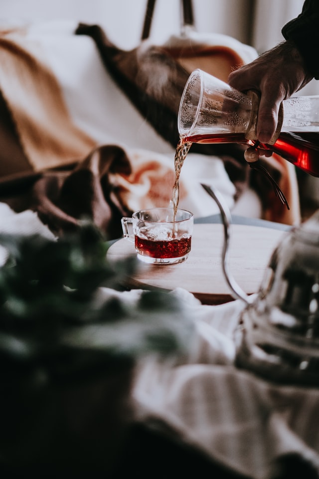

Hot Wine

How we make our famous Hot Wine
Hot Wine is our world famous signature drink. Mulled with locally sourced fruits and spices, it's the perfect drink to pair with any of our dinners or desserts. Try this easy to make-at-home version today!
Ingredients
- 1 lime, keep the peel and half the juice
- 700 ml white fruity wine (that is 1 normal bottle)
- 1-2 vanilla pods (or 2 tsp vanilla extract)
- 3 bay leaves
- ~10 whole cloves
- pinch of ground cloves
- pinch of white pepper
- 3 -4 tablespoons honey
- 6 tablespoons white port (optional, but fortifying)
Steps
- Peel the lime, cut into small pieces, and juice half of it.
- Pour the wine in a pan, add the lime peel, lime juice, vanilla pods, cloves, pepper, and bay leaves.
- Bring to just under a simmer. Lower the heat, cover the pan and leave to warm through for at least 15 minutes.
- Try to just keep it hot and not let it boil.
- Add 3 tablespoons of honey and the port, if using, then taste to see or you want to add more honey.
- Remove the vanilla pods, cloves, lime peel and the bay leaves.
- Serve in a heatproof glass.